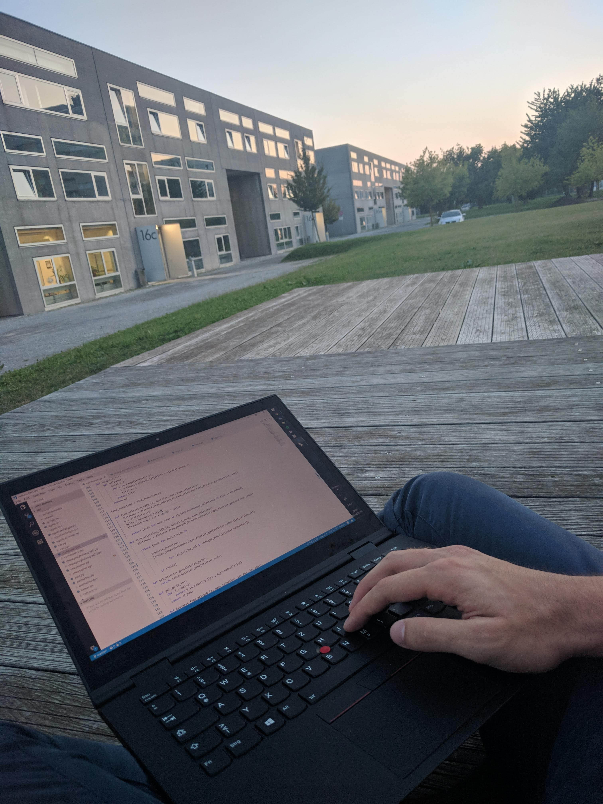

space
space
Sometimes I solve my daily problems with nifty little apps I write as a leisure activity. Most of my code is free and open source. Find my projects on Github .
I am a big functional programming Haskell afficionado. Nevertheless, my teaching mainly is done in Python. To fascilitate bridging the gap in between both languages for my students I developed Pythas.
Follow my (strong) opinions about proramming languages in my blog
